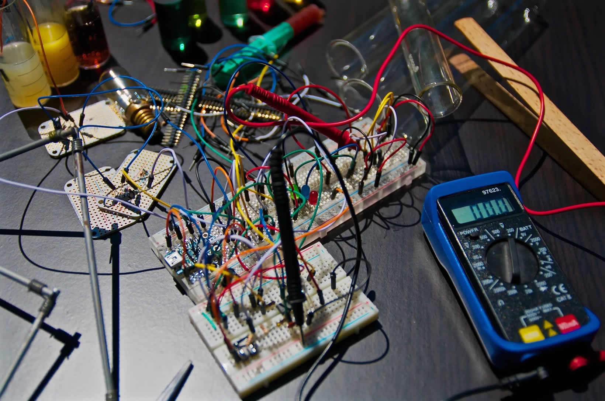

Electrical measuring devices are used in a variety of industries, including the food, pharmaceutical, automotive, and manufacturing sectors. Thus, a key factor in guaranteeing the quality and safety of these sectors is the calibration of these electrical equipment. The smooth operation of these devices is ensured via calibration, which guarantees that the measurement values they provide are accurate. Additionally, calibration ensures that the measurements can be tracked back. In our climate-controlled laboratory, the temperature is kept at 25±2ºC and the humidity ranges from 45 to 75 percent. Modern test benches for the lab standards, as well as a fur mat, are part of our electro-technical calibration lab’s equipment. We have master equipment that can be calibrated and has a traceability to national and international standards.
